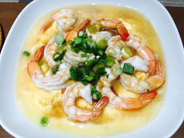

蒸水蛋 (Steamed Eggs)

1. Ingredients
- 5 Eggs, 1 cup unsalted chicken stock, salt, soy sauce, fish sauce, green onions
- Optionl but awesome - shrimp
Note: 1 cup of broth will make it more firm than 2 cups. Try both versions and see which one you like.
2. How to make it
- Steam in instant pot for 3 minutes or anywhere you want. Cover with aluminum foil to keep it soft
3. Nutrition
Total: * Calories: 440 * Protein: 40
Each ingredient: * 5 eggs - 390 calories, 40 g protein * Chicken stock, soy sauce, and fish sauce - 50 calories
4. Chinese
- Steamed: 蒸熟 / Zhēng shú
- Eggs: 蛋 / Dàn
- Steamed eggs: 蒸水蛋 / Zhēng shuǐ dàn